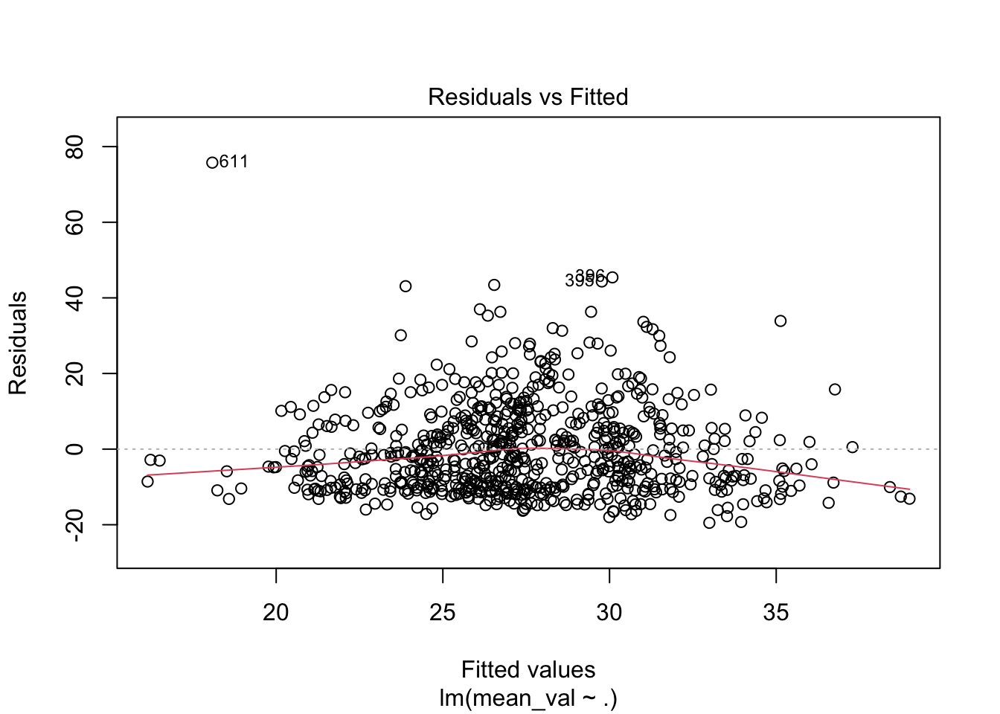
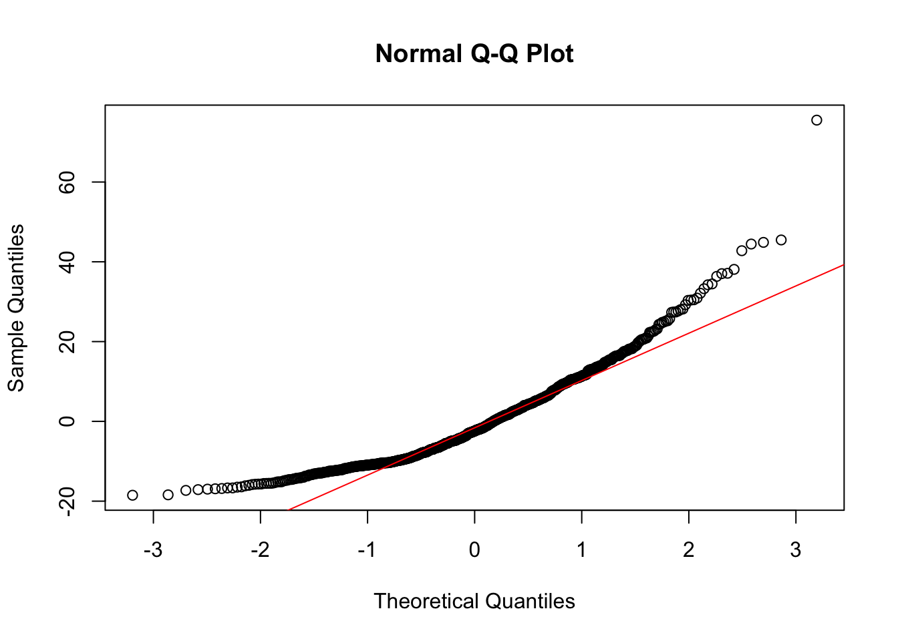
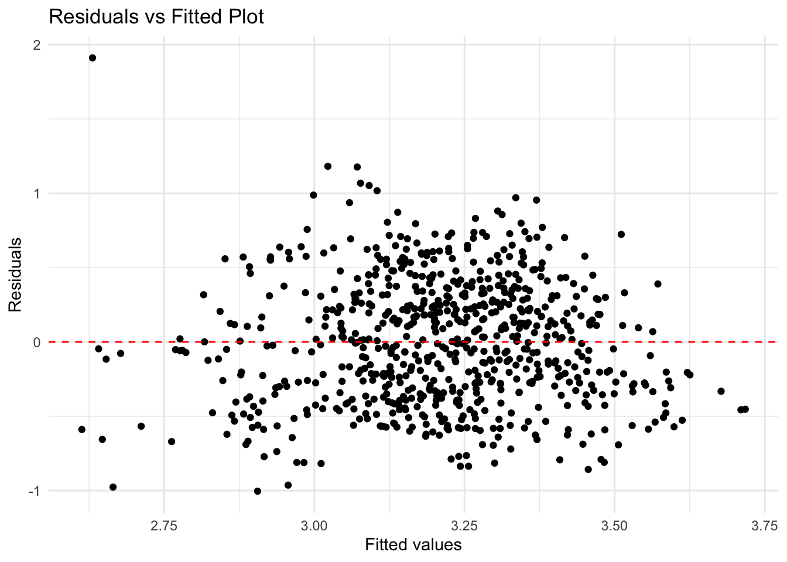

Analysis
A statistical analysis of maternal mortality rates.

Motivation and Research Question
Motivation
The main purpose of the study is to explore the differences in maternal mortality rates (MMR) among different ethnic groups from 1999 to 2019 across the U.S., and the impact of healthcare spending and average age of pregnancy on these maternal mortality rates. By comparing the average maternal mortality rate in each state with other variables, the result can help to identify the factors that most affect maternal mortality rates, thereby enhancing the understanding and protection of women.
Research Questions
- What are the trends of maternal mortality rates (MMR) in different regions among different racial groups over time?
- How is healthcare spending distributed across different regions?
- What is the relationship between healthcare spending and maternal mortality rates over time?
- What are the effects of pregnancy age on maternal mortality rates?
Outline
1. General Information Analysis
2. Simple Linear Regression Models
3. Multiplie Linear Regression Model
4. Log-Log Regression Model
1. General Information Analysis
Study of Maternal Mortality Trends Across Race and Location
• Regional Trends:
Midwest Region (Red Line): Generally, a rising trend in maternal mortality rates is visible across most racial groups, especially pronounced in Non-Hispanic American Indian and Alaska Native and Non-Hispanic Black populations.
Northeast Region (Green Line): This region shows relatively stable or slightly rising rates among all groups, with significant increases visible in the Non-Hispanic Black and Non-Hispanic American Indian and Alaska Native groups around 2015.
South Region (Blue Line): This region exhibits the highest maternal mortality rates, particularly among Non-Hispanic Black women, where rates have sharply increased since around 2010.
West Region (Purple Line): Displays relatively lower and more stable rates across most groups, except for a sharp increase in mortality among Non-Hispanic American Indian and Alaska Native groups after 2015.
• Interpretation of Racial Disparities: Across all regions, Non-Hispanic Black women and Non-Hispanic American Indian and Alaska Native women consistently have higher maternal mortality ratios compared to other racial groups, indicating significant racial disparities in maternal healthcare outcomes.
• Temporal Trends: A general increase in maternal mortality ratios is observed from 1999 to 2019 across most racial and regional breakdowns, with some fluctuations and sharp increases in specific years and regions.
Maternal Mortality vs. Healthcare Spending by Year

• Trends by Year:
Early Years (1999-2008): Lower variability in healthcare spending, with most data points clustered around the lower end of the spending spectrum. MMR appears relatively stable across different spending levels.
Middle Years (2009-2014): Slight increase in both healthcare spending and MMR variability. Some outliers begin to appear, especially at higher spending levels without a corresponding decrease in MMR.
Later Years (2015-2018): Increased spread in healthcare spending, with MMR data points showing a wide range of outcomes at both lower and higher spending levels.
• Interpretation of Trends:
There is no clear correlation visible from the graph that higher healthcare spending consistently leads to lower MMR. In fact, the variability suggests complex dynamics where increased spending does not straightforwardly translate to better maternal health outcomes.
The presence of data points at high spending levels but with high MMR indicates inefficiencies or other underlying issues in healthcare systems.
• Overall Analysis: This visual suggests that while healthcare spending has increased over the years, the improvement in maternal mortality rates does not appear to be directly proportional. This underscores the need for more targeted and effective healthcare interventions specifically aimed at reducing maternal mortality.
Healtcare Spending by Census Region

• Trends and Correlations:
Midwest (Red): Displays a moderate positive correlation between increased healthcare spending and higher average age of pregnancy.
Northeast (Green): Shows a strong positive correlation, suggesting that as healthcare spending increases, the average age of pregnancy also tends to be higher.
South (Blue): Similar to the Midwest, there is a positive correlation, but with more variability in data points.
West (Purple): Exhibits a positive correlation with some variability. The trend line indicates that increased spending might be associated with a slight increase in the average age of pregnancy.
• Interpretation of Trends:
All regions show a positive correlation between healthcare spending and the average age of pregnancy, indicating that higher spending might be associated with older maternal ages. This could reflect better access to healthcare, allowing women to delay pregnancy.
The strength of correlation varies by region, with the Northeast showing the strongest correlation and the most consistent trend.
• Overall Analysis: Regions with higher healthcare investments might provide better support for women to plan their pregnancies later in life, possibly due to better healthcare services and access to family planning.
2. Simple Linear Regression Models
Building on the insights derived from the graphical analysis, the application of a regression model can enhance the robustness of the findings by quantifying the extent of the relationship between healthcare spending and the average age of pregnancy through statistical measures.
Simple Linear Regression for MMR-Race_Group
| Estimate | Std. Error | t value | Pr(>|t|) | |
|---|---|---|---|---|
| (Intercept) | 24.065774 | 4.834879 | 4.9775344 | 0.0000007 |
race_groupHispanic and any race |
-9.250687 | 4.877856 | -1.8964658 | 0.0579473 |
race_groupNon-Hispanic American Indian and Alaska Native |
9.704710 | 4.877856 | 1.9895442 | 0.0466873 |
race_groupNon-Hispanic Asian, Native Hawaiian, or Other Pacific Islander |
-7.296758 | 4.877856 | -1.4958944 | 0.1347347 |
race_groupNon-Hispanic Black |
20.094579 | 4.877856 | 4.1195513 | 0.0000385 |
race_groupNon-Hispanic White |
-4.131805 | 4.877856 | -0.8470534 | 0.3969998 |
Hispanic and any race: This group has a coefficient of -9.25, which suggests that being from the “Hispanic and any race” group is associated with a decrease of approximately 9.25 in the dependent variable
valcompared to the reference group. The p-value of 0.0579473 indicates that this result is marginally significant (just above the usual 0.05 threshold).Non-Hispanic American Indian and Alaska Native: The coefficient of 9.70 indicates that being from this race group is associated with an increase of approximately 9.70 in MMR compared to the reference group, and this result is statistically significant (p-value = 0.0466873).
Non-Hispanic Asian, Native Hawaiian, or Other Pacific Islander: This group has a coefficient of -7.30, suggesting a decrease in MMR by about 7.30 compared to the reference group. However, the p-value of 0.1347347 suggests that this association is not statistically significant.
Non-Hispanic Black: This group has a positive coefficient of 20.09, indicating that being from this race group is associated with an increase in MMR by about 20.09 compared to the reference group. This effect is statistically significant with a p-value of 0.0000385.
Non-Hispanic White: The coefficient of -4.13 suggests that being from the Non-Hispanic White group is associated with a decrease of about 4.13 in MMR compared to the reference group. The association is not statistically significant (p-value = 0.3969998).
The analysis underscores the existence of racial disparities in maternal mortality, with significant differences particularly affecting Non-Hispanic Black and American Indian/Alaska Native populations. These findings highlight the need for targeted interventions and policies to address the disproportionately higher risks faced by these groups.
| r.squared | adj.r.squared | sigma | statistic | p.value | df | logLik | AIC | BIC | deviance | df.residual | nobs |
|---|---|---|---|---|---|---|---|---|---|---|---|
| 0.205707 | 0.2050333 | 22.1562 | 305.3389 | 0 | 5 | -26652.14 | 53318.29 | 53365.07 | 2893838 | 5895 | 5901 |
• Model Fit (R-squared and Adjusted R-squared): The R-squared value of 0.2057 suggests that about 20.57% of the variability in the MMR is explained by the model. The adjusted R-squared value, slightly lower at 0.2050, adjusts for the number of predictors in the model and confirms that about 20.50% of the variability is explained after accounting for the number of predictors.
• Model Significance (F-statistic and p-value): The F-statistic of 305.34 and a p-value near zero indicate that the model is statistically significant. This means the effects observed in the model are unlikely to be due to random chance, suggesting a strong relationship between the predictors (race_group, possibly along with other factors) and the response variable.
• Residuals and Model Adequacy (Sigma and Deviance): The sigma value of 22.1562, representing the standard error of the residuals, suggests that the typical deviation of the observed values from the fitted values is about 22.16. The large deviance value of 2893838 also indicates substantial variability around the fitted values, which might suggest potential model underfitting or the presence of outliers.
Simple Linear Regression for MMR-AGE
| Term | Estimate | Standard Error | t-Statistic | p-Value |
|---|---|---|---|---|
| (Intercept) | -0.0291566 | 0.0106093 | -2.748219 | 0.0061437 |
| AverageAge | 0.0021585 | 0.0004042 | 5.339643 | 0.0000001 |
Coefficient for AverageAge: The coefficient estimate for
AverageAgeis 0.00216. This indicates that for each additional year increase in the average age, the MMR increases by approximately 0.00216 percent on average, assuming a linear relationship. This also aligns with the intuition that as people age, the risk of mortality increases.Statistical Significance: The p-value for
AverageAgeis extremely low (0.0000001), indicating strong statistical significance. This suggests that there is a very low probability that the observed association is due to random chance, implying thatAverageAgeis a significant predictor of MMR.
| Metric | Value |
|---|---|
| R-squared | 0.0385028 |
| Adjusted R-squared | 0.0371524 |
| Sigma | 0.0122513 |
| F-statistic | 28.5117877 |
| p-value | 0.0000001 |
| Degrees of Freedom | 1.0000000 |
Model Fit (R-squared and Adjusted R-squared): The R-squared value of 0.0385 indicates that approximately 3.85% of the variability in the MMR is explained by the model. The adjusted R-squared value also indicates the model does not capture much of the variability.
Model Significance (F-statistic and p-value): The F-statistic of 28.51 and the p-value of 0.0000001 indicate that the model is statistically significant, meaning that the relationship between the MMR and AverageAge is unlikely due to chance. However, despite statistical significance, the low R-squared indicates that other factors might influence the dependent variable not captured by this model.
3. Multiplie Linear Regression for MMR-AGE with Healthcare Spending and Region
To accurately understand maternal mortality rates (MMR) in relation to age, it’s essential to consider other influential factors such as healthcare spending and regional differences. Multiple linear regression allows us to assess the combined impact of these factors, providing a more nuanced analysis of how each variable influences MMR while controlling for others.
Correlation Matrix
| year | spending | mean_val | AverageAge | RegionMidwest | RegionNortheast | RegionSouth | RegionWest | |
|---|---|---|---|---|---|---|---|---|
| year | 1.0000000 | 0.8550099 | 0.5733729 | 0.6375395 | 0.0000000 | 0.0000000 | 0.0000000 | 0.0000000 |
| spending | 0.8550099 | 1.0000000 | 0.3757901 | 0.6721931 | 0.0099172 | 0.2648214 | -0.0468564 | -0.1906206 |
| mean_val | 0.5733729 | 0.3757901 | 1.0000000 | 0.1962213 | -0.0083461 | -0.0849174 | 0.0234427 | 0.0570471 |
| AverageAge | 0.6375395 | 0.6721931 | 0.1962213 | 1.0000000 | 0.0962390 | 0.3896595 | -0.3807046 | -0.0227236 |
| RegionMidwest | 0.0000000 | 0.0099172 | -0.0083461 | 0.0962390 | 1.0000000 | -0.2567763 | -0.3922323 | -0.3244428 |
| RegionNortheast | 0.0000000 | 0.2648214 | -0.0849174 | 0.3896595 | -0.2567763 | 1.0000000 | -0.3273268 | -0.2707550 |
| RegionSouth | 0.0000000 | -0.0468564 | 0.0234427 | -0.3807046 | -0.3922323 | -0.3273268 | 1.0000000 | -0.4135851 |
| RegionWest | 0.0000000 | -0.1906206 | 0.0570471 | -0.0227236 | -0.3244428 | -0.2707550 | -0.4135851 | 1.0000000 |
• The correlation matrix shows a strong positive correlation between year and healthcare spending (0.855), suggesting that healthcare spending has generally increased over time. It also highlights a moderate positive correlation between mean_val (MMR) and year (0.573), implying that the extent of MMR have increased over time, though other factors are also influencing it.
• The regional dummy variables have low or negative correlations with most other variables, indicating that regional effects might be distinct and not directly correlated with the continuous variables in the matrix.
Multiplie Linear Regression
| Estimate | Std. Error | t value | Pr(>|t|) | |
|---|---|---|---|---|
| (Intercept) | -0.0397276 | 0.0142639 | -2.7851746 | 0.0054929 |
| AverageAge | 0.0023156 | 0.0006034 | 3.8374240 | 0.0001354 |
| spending | 0.0000009 | 0.0000004 | 2.4463432 | 0.0146736 |
| RegionNortheast | -0.0063462 | 0.0014607 | -4.3446268 | 0.0000160 |
| RegionSouth | 0.0016395 | 0.0012851 | 1.2757507 | 0.2024621 |
| RegionWest | 0.0009128 | 0.0012995 | 0.7024228 | 0.4826464 |
Effect of Predictors:
AverageAge: With a coefficient of 0.0023 (p < 0.001), a unit increase in average age is associated with an estimated increase of 0.023 units in MMR, holding other factors constant. In other words, as the average age increases by a year, the predicted maternal mortality in this model increases by 0.0023 percent. This implies that as the average age of mothers increases, MMR tends to increase which also fits with precious simple regression result.
Spending: The spending coefficient is 0.00000093 (p = 0.015), indicating that each unit increase in healthcare spending is associated with a slight increase in MMR, but the effect is very small. Intuitively, it is generally expected that increasing healthcare spending would reduce maternal mortality rates (MMR). However, since maternal mortality can also be linked to chronic diseases, increased healthcare expenditure does not always directly translate to improved outcomes. Additionally, as individuals are having children later in life compared to previous generations, the probability of maternal mortality may increase, which could contribute to higher healthcare costs without necessarily improving MMR.
> https://www.commonwealthfund.org/publications/issue-briefs/2021/nov/high-costs-maternal-morbidity-need-investment-maternal-healthRegions:
- Northeast: This region has a significant negative coefficient of -6.35 (p < 0.001), suggesting that, compared to the baseline region, the Northeast is associated with a lower level of MMR.
- Others: However, the result for other is not statistical significant.
| r.squared | adj.r.squared | sigma | statistic | p.value | df | logLik | AIC | BIC | deviance | df.residual | nobs | |
|---|---|---|---|---|---|---|---|---|---|---|---|---|
| value | 0.0866594 | 0.0802093 | 11.97426 | 13.43527 | 0 | 6 | -2782.799 | 5579.599 | 5611.595 | 101515 | 708 | 714 |
Model Fit (R-squared and Adjusted R-squared): The R-squared value of 0.087 suggests that the model explains approximately 8.7% of the variability in maternal mortality rates. The adjusted R-squared, at 0.080, adjusts for the number of predictors in the model and shows a similar low explanatory power. This indicates that the predictors included in the model explain only a small portion of the variation in MMR. The process of pregnancy involves everything from social circumstances to self-conditioning, so it makes sense that MMR can be influenced by many more factors. This however represents an increase from the R-squared value of only 3.7% in the previous single regression model.
Model Significance (F-statistic and p-value): The F-statistic of 13.44 and the associated p-value of 0 show that the overall model is statistically significant, meaning that the relationship between the independent variable and MMR is unlikely to have occurred by chance.
The MLR reveals that while the model is statistically significant in predicting maternal mortality rates, as evidenced by the F-statistic and p-value. Meanwhile, other indicators suggest that many additional factors, beyond the predictors used, contribute to variations in maternal mortality. Further research is necessary to identify these influencing factors to improve model accuracy.
Model Discussion

• The residual plot indicates that the multiple linear regression model generally fits the data well, as evidenced by the mostly random scatter of residuals around zero.
• However, the presence of slight curvature suggests potential non-linearity in the relationship, and the mild fan shape of the residuals suggests possible heteroscedasticity, meaning that the variability in MMR may increase with higher fitted values. The presence of outliers also suggests that further investigation is needed to ensure these points do not disproportionately influence the model’s results.

• The normal Q-Q plot shows that the residuals of the model generally follow a normal distribution, as most data points align with the diagonal reference line.
• However, there are notable deviations at the tails, particularly at the upper end, indicating the presence of significant outliers and suggesting that the residuals are not perfectly normal. This lack of normality at the extremes suggests that certain extreme data points might be influencing the model, potentially affecting its assumptions and necessitating further investigation or alternative modeling approaches.
4. Log-Log Regression Model
The multiple linear regression analysis and plots suggest potential issues with outliers and deviations from normality in the data. The residuals show some non-linearity and heteroscedasticity, indicating that the standard linear model might not be fully capturing the relationships among maternal mortality rates (MMR), age, spending, and regional effects. Applying a log-log regression model can linearize the relationships among variables, handle skewed data more effectively, and interpret coefficients as elasticities, which measure the percentage change in MMR in response to a 1% change in predictors. This approach can improve the model’s fit, stabilize variance, and provide more meaningful insights into the proportional changes affecting maternal mortality.
| Estimate | Std. Error | t value | Pr(>|t|) | |
|---|---|---|---|---|
| (Intercept) | -7.0327490 | 1.5617543 | -4.5031085 | 0.0000078 |
| log_AverageAge | 1.7399064 | 0.6121824 | 2.8421372 | 0.0046102 |
| log_spending | 0.5150077 | 0.0948862 | 5.4276323 | 0.0000001 |
| RegionNortheast | -0.3452760 | 0.0509757 | -6.7733414 | 0.0000000 |
| RegionSouth | 0.0424023 | 0.0455753 | 0.9303802 | 0.3524914 |
| RegionWest | 0.0475041 | 0.0455662 | 1.0425303 | 0.2975217 |
- Significant Predictors:
- log_AverageAge: With a coefficient of 1.74 and a p-value of 0.005, this predictor is statistically significant, indicating that a 1% increase in the average age is associated with an approximate 1.74% increase in MMR.
- log_spending: The coefficient of 0.52 (p < 0.001) indicates that a 1% increase in spending correlates with an approximate 0.52% increase in MMR, suggesting a positive relationship, possibly reflecting increased healthcare spending without directly reducing mortality rates.
- Regional Effects:
- RegionNortheast: This region has a significant negative coefficient of -0.35 (p < 0.001), suggesting that it is associated with approximately a 35% decrease in MMR compared to the baseline region.
- Others: Both regions have positive coefficients (0.04 and 0.05, respectively), but their p-values are not significant, indicating no statistically significant difference in MMR compared to the baseline region.
| R_squared | Adj_R_squared | Sigma | Statistic | P_value | DF | LogLik | AIC | BIC | Deviance | DF_Residual | Nobs | |
|---|---|---|---|---|---|---|---|---|---|---|---|---|
| value | 0.1597701 | 0.1538363 | 0.4186879 | 26.92531 | 0 | 6 | -388.48 | 790.9599 | 822.9561 | 124.1121 | 708 | 714 |
Model Fit (R-squared and Adjusted R-squared): The R-squared value of 0.16 indicates that the model explains approximately 16% of the variability in maternal mortality rates (MMR). The adjusted R-squared value of 0.15, which adjusts for the number of predictors in the model, suggests a slightly reduced explanatory power. This implies that while the model includes some significant predictors, a substantial portion of the variability in MMR remains unexplained, likely due to other factors not included in the model.
Model Significance (F-statistic and p-value): The F-statistic of 26.93 and its p-value of zero show that the overall model is statistically significant, meaning that the combined predictors significantly contribute to explaining variations in MMR. However, the relatively low R-squared values still suggest that there are additional important factors influencing MMR that are not captured by this model.
Model Diagnostics (Sigma, Log-Likelihood, AIC, and BIC): The sigma (residual standard error) of 0.42 reflects the average deviation of observed log-transformed MMR values from predicted values. The log-likelihood of -388.48 indicates the model’s goodness-of-fit, with higher values implying a better fit. The AIC (790.96) and BIC (822.96) values provide comparative measures of fit, penalizing for model complexity. The deviance (124.11) and residual degrees of freedom (708) give additional insight into the model’s residuals and flexibility, while the number of observations (714) reflects the sample size.
Model Discussion

• The model shows a more random and consistent distribution of residuals compared to the previous model, indicating a better fit to the data. The spread of residuals is more uniform, suggesting that the log-log model effectively addresses non-linearity and reduces heteroscedasticity, making the variance of residuals more constant.
• There are fewer extreme outliers, which means that the log-log transformation mitigates the influence of extreme data points and provides a more accurate representation of the relationship between maternal mortality rates, age, spending, and regional factors. Despite this improvement, further refinement could enhance the model’s overall fit and predictive accuracy.

• The plot shows that the residuals from the log-log regression model follow a normal distribution, with most points aligning closely to the diagonal reference line.
• There are slight deviations at the extremes, which are indicative of some outliers affecting the tails. Compared to the previous Q-Q plot, which exhibited more extreme deviations from normality at the upper end, the log-log model demonstrates improved normality of residuals, suggesting that the log transformation helps to mitigate the influence of outliers and enhances the overall fit.
Flaws and Limitations
During the examination of the relationship between healthcare spending and maternal mortality rates, it was determined that the correlation between these variables is not robust, suggesting the influence of additional factors on the mortality rates. Additionally, the available data on pregnancy rates across various states lacks comprehensive categorization by ethnic groups, thereby hindering a more refined analysis that could reveal differential effects of pregnancy rates among distinct ethnic demographics on maternal mortality rates.
The healthcare spending data did not account for variations in the inflation rate over the years. This oversight could result in a misleading upward trend in healthcare expenditure over time, potentially compromising the validity of subsequent analyses and conclusions derived from this data. It is therefore recommended that future studies adjust for inflation to provide a more accurate depiction of real changes in healthcare spending, ensuring a more reliable investigation into its effects on maternal mortality rates.
Conclusion
Temporal Trends in Maternal Mortality: Observational data indicates a progressive increase in maternal mortality rates across the United States over time. Particularly vulnerable to this trend are Non-Hispanic American Indian, Alaska Native, and Non-Hispanic Black populations, which exhibit disproportionately higher rates of maternal mortality.
Healthcare Spending Distribution: Analyses reveal that the allocation of healthcare spending is relatively consistent across various U.S. regions. This uniformity suggests that regional disparities in maternal outcomes may be influenced by factors other than the mere level of financial investment in healthcare.
Impact of Healthcare Expenditure on Maternal Mortality: There is a prevailing assumption that increasing healthcare spending will lead to a reduction in maternal mortality rates. However, the data suggests a complex relationship that may require a multifaceted approach, addressing quality and accessibility of maternal care, alongside increased financial investment.
Correlation Between Maternal Age and Mortality Rates: Evidence points to a correlation between the age of pregnancy and maternal mortality rates, with an increase in age associated with higher mortality risks. This trend underscores the need for enhanced prenatal and postnatal care tailored to older pregnant women, highlighting age as a significant factor in maternal health risk assessments.